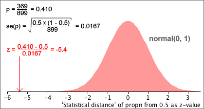

Test statistic and p-value
The statistical distance of an estimate to a hypothesised value of the underlying parameter is

If the null hypothesis holds, z has approximately a standard normal distribution and it can be used as a test statistic for tests about the parameter. The p-value can be determined from the tail areas of this standard normal distribution.

For a two-tailed test, the p-value is the red tail area and can be looked up using either normal tables or in Excel.
Example
We again examine a data set in which 369 out of 899 home-based businesses were owned by women. Are less than 50% of such businesses owned by women?
H0 : π = 0.5
HA : π < 0.5
The diagram below shows how the 'statistical distance' of the sample proportion from 0.5 is calculated.

The p-value for the test is the lower tail area of the standard normal distribution and is virtually zero here, so we again conclude that it is almost certain that less than 50% of such businesses are owned by women.
Using a 'statistical distance' to test a proportion gives a p-value that is identical to the p-value based on a normal approximation to the number of successes without a continuity correction. (The p-value is slightly different if a continuity correction is used.) However this approach will be used to test many different kinds of parameter in later sections.
(The procedure will be refined slightly when applied to situations where the standard error of the estimate must itself be estimated from the sample data. A t distribution will be used instead of a standard normal distribution.)